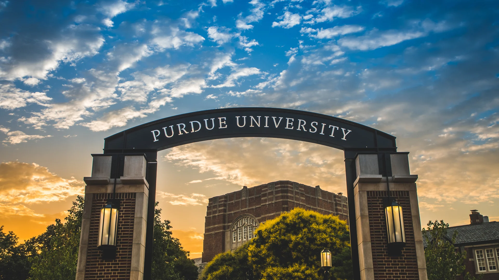

I'm a first-year master's student studying Computer Engineering at Purdue University, with a strong focus on software engineering and AI. I graduated from a bachelor's in Mechanical Engineering last spring with minors in Mathematics and Economics and a Honors College degree. I was involved with Honors Mentor Program as a mentor and council member and with the Purdue Mechanical Engineering Ambassadors as a memeber and Public Relations chair.